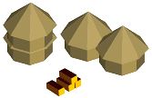

Peekaboo
Point 1: Starting State.
The Peekaboo do NOT start with a starting city, and they do NOT have their own terrain. Instead, they own all villages and have a “capital village” where their one invisible explorer starts. The Explorer is harmless, has a slightly better HP regen than Warriors, and has a movement of 2. Though the Peekaboo own all villages, they cannot see or interact with them until they uncover them from the clouds. Once the village is uncovered, you can start making units and stars per turn with them.
The Peekaboo can upgrade their villages and make units and buildings, but no other tribe can see or be affected by these improvements until the capital village is discovered. The Peekaboo do not have a starting tech, and cannot steal one from any source until the capital village is discovered (see point 3). As well, the Peekaboo cannot use ruins until they are discovered.
Point 2: When The Enemy takes over a normal village
If there were any improvements made to it by the Peekaboo, the enemy can now see it. However, none of the units attached to it can be seen.
Point 3: When the Enemy attempts to take over the Capital Village
The Peekaboo are ‘discovered.’ The enemy unit attempting to take the capital village over gets destroyed with no cost to the Peekaboo. Any units taking over other villages are destroyed with no cost as well. The Capital Village, all remaining villages and all units become active and can affect and be affected by the Enemy. If there is overlap between any Peekaboo units and any enemy units, the Peekaboo units will either shove the enemy into a nearby square or destroy them if there is no room to push them.
Once the Peekaboo get discovered, they can interact with other tribes. If they met any other tribes, they steal a tech from them now. The Peekaboo can use ruins now too. As well, other tribes can interact with the Peekaboo: they benefit from their roads, they can be attacked by their warriors, and can see their movements and the fact they exist when they get the replay of other tribe movements.
It only takes 1 Enemy to discover the Peekaboo for everyone. Once the Peekaboo are discovered they can never go back to being hidden.

Level 2 Village